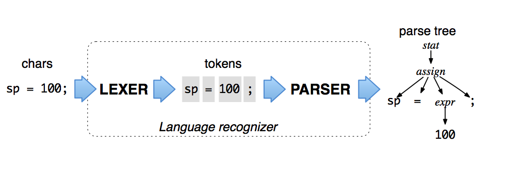

1. Parse Tree Listeners
Partially taken from publically visible excerpt from ANTLR 4 book
By default, ANTLR-generated parsers build a data structure called a parse tree or syntax tree that records how the parser recognized the structure of the input sentence and component phrases.

The interior nodes of the parse tree are phrase names that group and identify their children. The root node is the most abstract phrase name, in this case stat (short for statement). The leaves of a parse tree are always the input tokens. Parse trees sit between a language recognizer and an interpreter or translator implementation. They are extremely effective data structures because they contain all of the input and complete knowledge of how the parser grouped the symbols into phrases. Better yet, they are easy to understand and the parser generates them automatically (unless you turn them off with parser.setBuildParseTree(false)).
Because we specify phrase structure with a set of rules, parse tree subtree roots correspond to grammar rule names. ANTLR has a ParseTreeWalker that knows how to walk these parse trees and trigger events in listener implementation objects that you can create. The ANTLR tool generates listener interfaces for you also, unless you turn that off with a commandline option. You can also have it generate visitors. For example from a Java.g4 grammar, ANTLR generates:
public interface JavaListener extends ParseTreeListener<Token> {
void enterClassDeclaration(JavaParser.ClassDeclarationContext ctx);
void exitClassDeclaration(JavaParser.ClassDeclarationContext ctx);
void enterMethodDeclaration(JavaParser.MethodDeclarationContext ctx);
...
}
where there is an enter and exit method for each rule in the parser grammar. ANTLR also generates a base listener with the fall empty implementations of all listener interface methods, in this case called JavaBaseListener. You can build your listener by subclassing this base and overriding the methods of interest.
Assuming you've created a listener object called MyListener, here is how to call the Java parser and walk the parse tree:
JavaLexer lexer = new JavaLexer(input);
CommonTokenStream tokens = new CommonTokenStream(lexer);
JavaParser parser = new JavaParser(tokens);
JavaParser.CompilationUnitContext tree = parser.compilationUnit(); // parse a compilationUnit
MyListener extractor = new MyListener(parser);
ParseTreeWalker.DEFAULT.walk(extractor, tree); // initiate walk of tree with listener in use of default walker
Listeners and visitors are great because they keep application-specific code out of grammars, making grammars easier to read and preventing them from getting entangled with a particular application.
See the book for more information on listeners and to learn how to use visitors. (The biggest difference between the listener and visitor mechanisms is that listener methods are called independently by an ANTLR-provided walker object, whereas visitor methods must walk their children with explicit visit calls. Forgetting to invoke visitor methods on a node’s children, means those subtrees don’t get visited.)